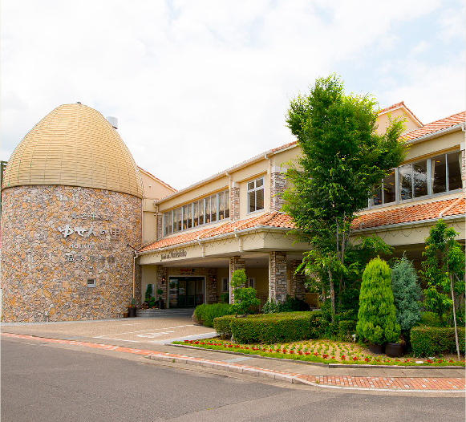

- ホーム
- アクセス
アクセス
Access

養老温泉 ゆせんの里
〒503-1316岐阜県養老郡養老町押越1522-1
TEL. 0584-34-1313
FAX. 0584-34-0690
本館
8:00 ～ 22:00（最終入館 21:30）
(定休日:毎月第2木曜日)
温熱療法館
10:00 ～ 23:00（最終入館 21:00）
交通
Traffic
自動車
| 東京・名古屋・大阪方面 |
東名・名神高速道
東海環状道
|
養老IC |
一般道
約6分
|
ゆせんの里 |
|---|---|---|---|---|
| 三重・長島方面 |
東名阪高速道路
|
桑名東IC |
一般道
約40分
|
電 車
| 東海道新幹線 | 岐阜羽島駅 |
一般道
約30分
|
ゆせんの里 | |
|---|---|---|---|---|
| 米原駅 |
一般道
約60分
|
|||
| 養老鉄道 | 養老駅 |
一般道
約10分
|
||
| 東海道本線 | 大垣駅 |
一般道
約20分
|
無料シャトルバス
ゆせんの里発 養老駅行き
本館・温熱療法館入口前より
- 10:30 発
- 11:15 発
- 16:30 発
- 17:15 発
養老駅発 ゆせんの里行き
養老駅より
- 10:55 発
- 11:35 発
- 16:55 発
- 17:35 発